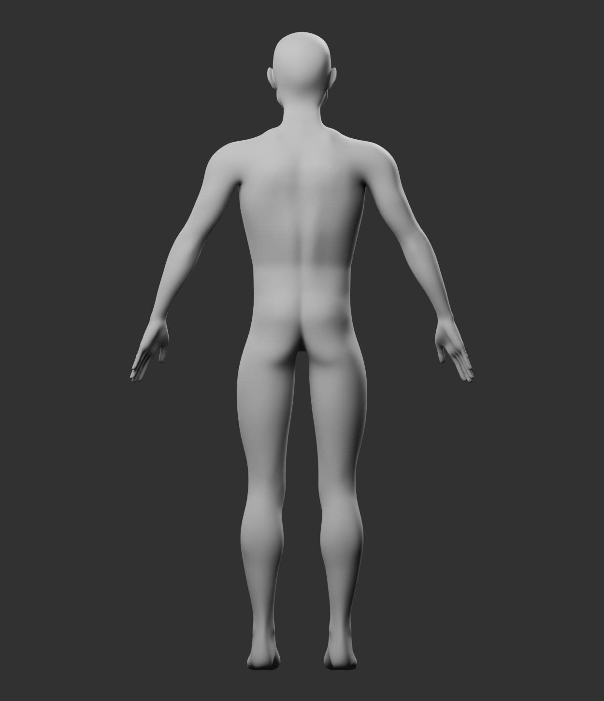
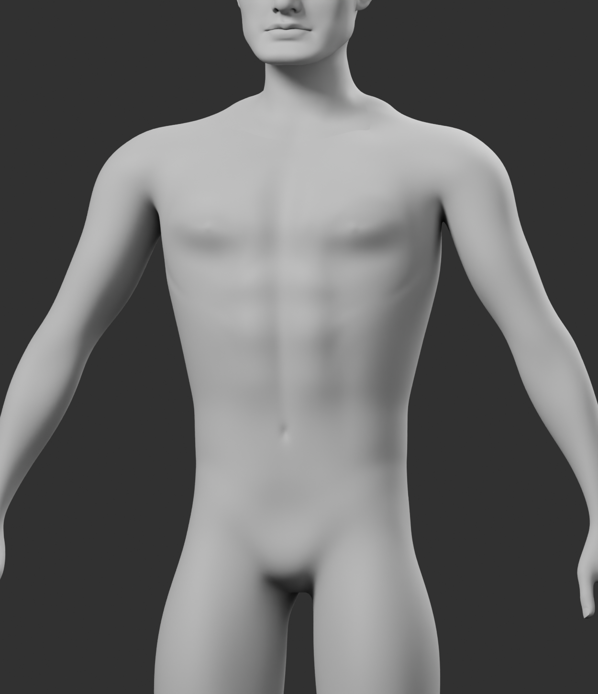
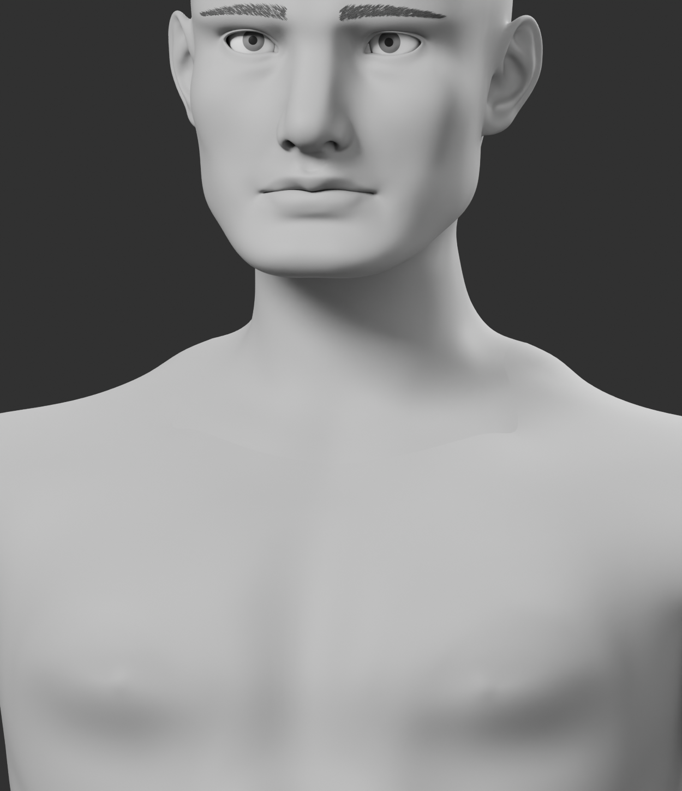
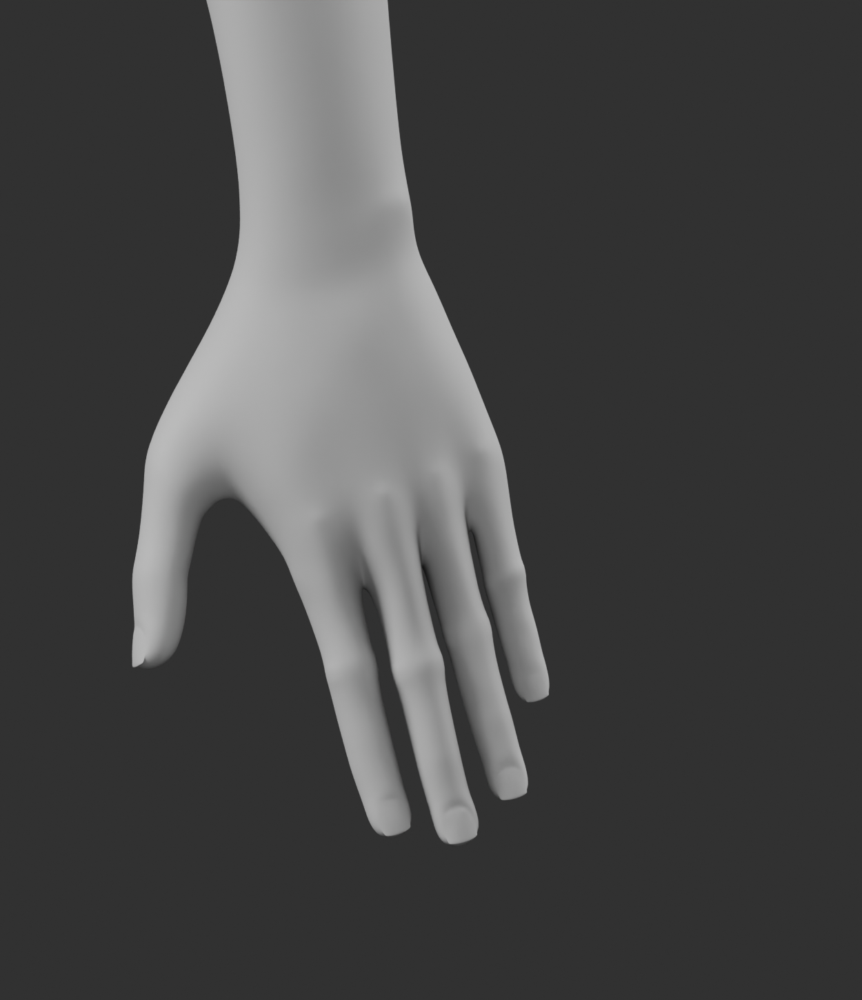
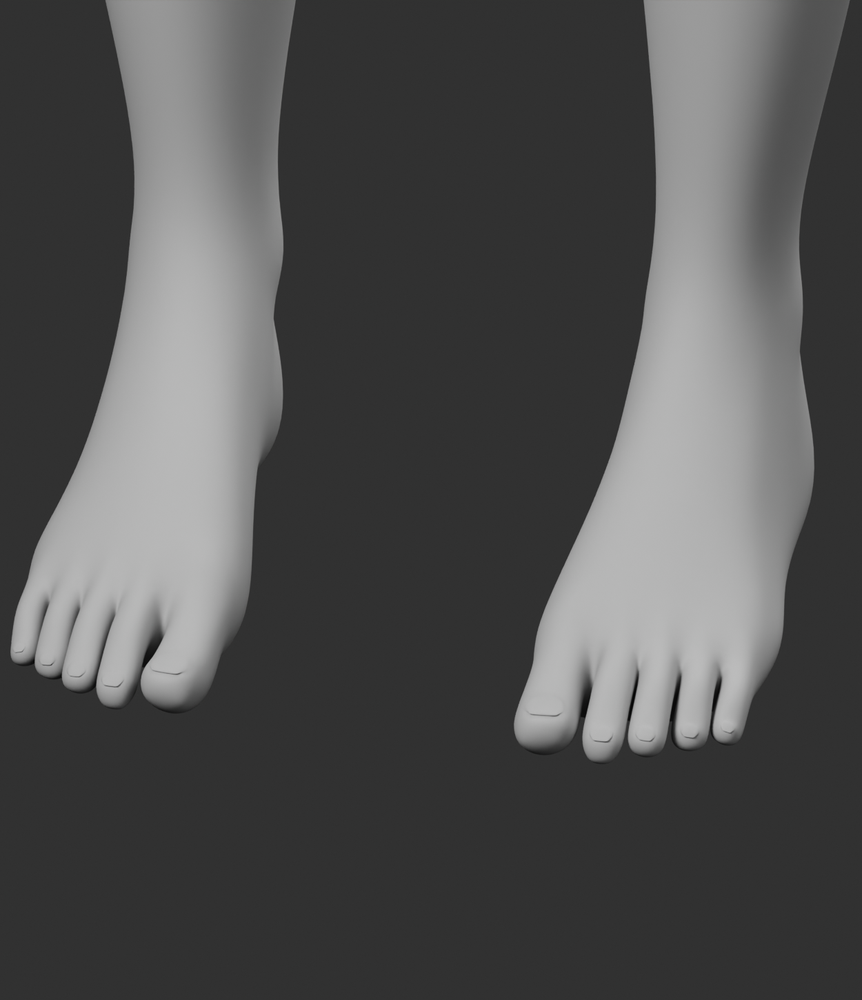
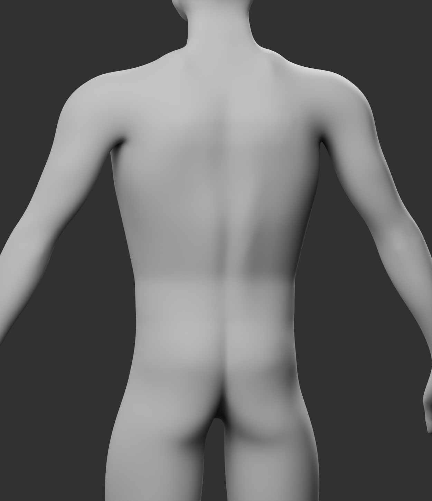
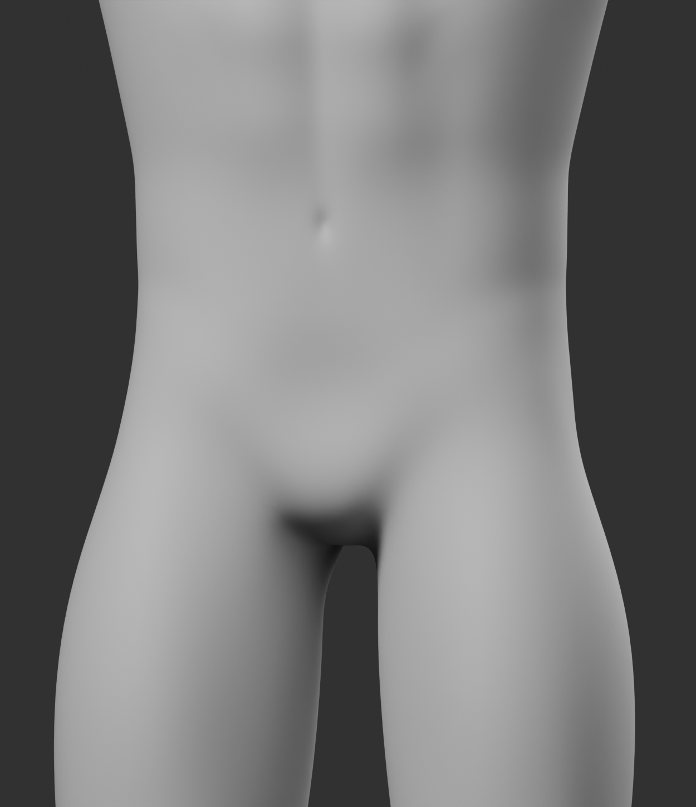
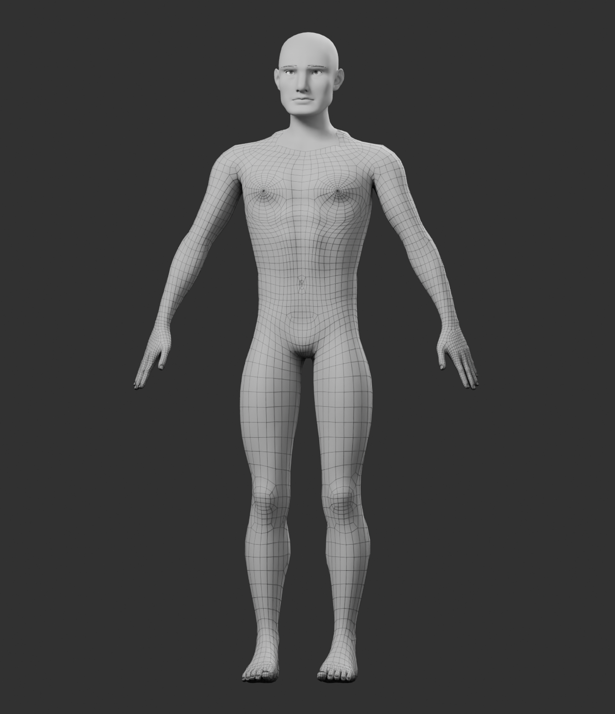
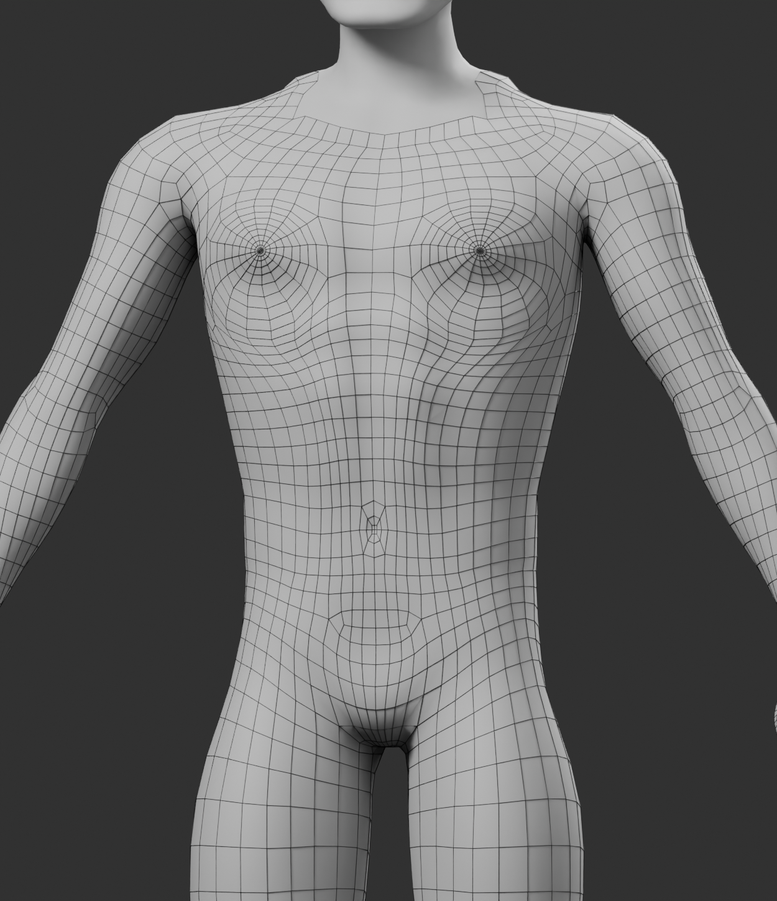

Male body foundation · anatomy pass 02
Coordinated torso, pelvis and limb revision against the supplied slim/fit male body concept, which is the visual acceptance target. Professional topology and the approved head are preserved. These are renders of the actual unclothed Blender geometry.
The candidate's proportions have been revised, but surface definition remains softer than the concept, especially across shoulders and back. This is a review candidate, not a claim that the concept's sculpt quality has been reached.
Neutral front · three-quarter · profile · back



Anatomy details






Preserved professional edge layout


Head and body remain separate editable meshes. Their 40 seam vertices coincide exactly. A temporary validation weld closes the complete anatomical shell with no boundary or non-manifold edges; the saved modules remain separate.
No skin-to-skin cage intersections were found. Small source nail/skin contacts remain recorded for cleanup. Deformation and final UV density are not validated.
Concept authority and identity boundaries

The approved male head is the anatomical foundation. Its basis is frozen; future individual identities are authored as controlled targets above it. The concept character's identity preset remains to be authored.
Separate layers: foundation, persistent identity, anatomical proportions, body composition, pigmentation, replaceable modules and transient expressions.
Coordinated anatomy: revised clavicle/shoulder and hip/knee/ankle placement drives the mesh together with ribcage, waist, pelvis and limb forms. The file includes a hidden collection of inspectable joint landmarks.
Future rig: the preserved SilverScreen 91-bone semantic contract. The guides are unbound anatomical fitting proposals. This candidate has no imported CC armature or skin binding.
Semantic joint-landmark profile · Previous technical-only checkpoint

This is a neutral geometry gate. There are no fitted garments, final materials, skinning, animations or Unity character import. Visual approval and deformation quality are not inferred from the topology checks.
Identity-target strategy · Structural validation report · Approved head review